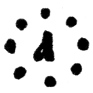
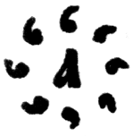
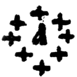
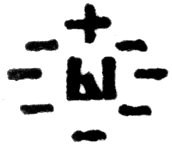

Юл. 05 сентябрь
Церковнославянские числа изображаются буквами, стоящими под титлом. В однозначных числах титло ставится над буквой этого числа, в двузначных и многозначных — над второй буквой от конца (предпоследней); тысяча обозначается косой чертой, перечеркнутой двумя малыми черточками:
№—1; в7—2; G—3;Примечание:
Славянские числа
кириллицы взяты из греческого языка, а потому следуют порядку греческого
алфавита. В глаголице числа следовали порядку глаголического алфавита.
Большие числа имели еще особые начертания и названия, но в настоящее время они уже вышли из употребления, впрочем, некоторые названия сохранились:
— тьмA (10 000),
 — легеHнъ или несвёдь (100 000),
 — леHдръ (1 000 000),
 — врaнъ (10 леодр),
— кол0да (10 вран),
 — тмA тeмъ (10 колод).